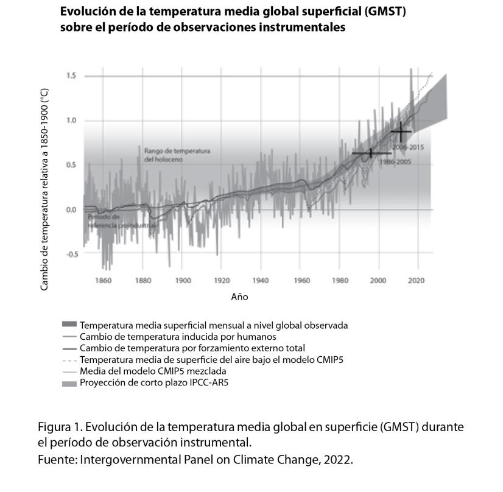

CAPÍTULO 8
Responsabilidad ante impactos
climáticos transfronterizos

Adrián Martínez Blanco
Adrián es el director y fundador de La Ruta del Clima. M.A. Ambiente, Desarrollo y Paz, con especialidad Políticas en Cambio Climático. United Nations Mandated University for Peace. Coordinación de la Climate Action Network - Grupo de Trabajo de Pérdidas y Daños. Alumni ICC en Die Alexander von Humboldt-Stiftung. Candidato a doctorado en la Universidad de Finlandia Oriental. Máster en Medio Ambiente, Desarrollo y Paz. Investigador en participación pública, derechos humanos, pérdidas y daños, y derecho climático internacional.
Cambio climático y contexto
El estado del clima de América Latina y el Caribe es preocupante. Según la Organización Meteorológica Mundial, en el 2021 la tasa media de aumento de temperatura por década se ha duplicado si se comparan los años que van de 1961 a 1990 y los que van desde 1991 hasta 2021. El aumento ha sido de 0,2 °C por década. Al mismo tiempo, los glaciares de los Andes perdieron un 30% de superficie desde 1980.También el nivel del mar se incrementa a un ritmo más acelerado. Durante 2021 hubo 21 tormentas con nombre, y fue el año más activo del que se tiene constancia en el Atlántico. Y se han dado altos niveles de inseguridad alimentaria en Centroamérica, en donde las precipitaciones extremas, crecidas y deslizamientos de tierra provocan pérdidas sustanciales (World Meteorological Organization, 2021).
El Panel Intergubernamental de Expertos sobre el Cambio Climático (IPCC, por sus siglas en inglés) menciona que estas transformaciones han reducido la seguridad alimentaria, han afectado la seguridad hídrica por los cambios de patrones de lluvias, incrementaron la frecuencia e intensidad de extremos climáticos y la pérdida de elementos de la criosfera. Para Centroamérica y Sudamérica implica que millones de personas estén expuestas a inseguridad alimentaria severa y sufran seguridad hídrica reducida por eventos climáticos extremos. La situación impacta, en especial, a hogares con bajos ingresos económicos, pueblos indígenas y productores de alimentos de baja escala (Lee et al., 2023). El cambio climático afecta a varios derechos humanos, como el derecho a la vida, vivienda, agua, saneamiento, alimentación, salud, desarrollo, seguridad de las personas, estándar adecuado de vida, y a un ambiente sano. Los impactos negativos del cambio climático afectan desproporcionadamente a las personas en condición de pobreza, las mujeres, la niñez, migrantes, personas con discapacidad, minorías, pueblos indígenas y otras poblaciones marginalizadas (Human Rights Council, 2016).
El cambio climático es un fenómeno causado por la actividad económica en base a hidrocarburos de los países y grandes industrias (Naciones Unidas, 1992a). Este es un enunciado respecto al cual hay consenso internacional desde hace más de tres décadas. Sin embargo, debajo de este concepto se esconden realidades que son clave para un abordaje político de la crisis climática.
Entre ellas está el hecho de que el uso de dichos hidrocarburos ha sido históricamente diferenciado entre las regiones, países y sectores de la población. Existe una desigualdad inherente a la causalidad de cambio climático que reside en el uso del carbono.
En sí, cuando hablamos de cambio climático debemos entenderlo como la consecuencia de una actividad económica no uniforme que genera diferenciación.
Y esta diferenciación es aplicable tanto a los beneficios económicos que llegaron gracias a ciertas sociedades o industrias, como a la responsabilidad sobre los cambios en el clima que se produjeron a raíz de sus actividades. Lo cual hace natural que cuando hablemos de los impactos adversos del uso desigual del carbono, la responsabilidad sea diferenciada. Distinción que también tiene una dimensión injusta porque, por razones de ubicación y de vulnerabilidad contextual, las personas menos responsables por generar emisiones sufren un mayor impacto por el cambio climático.
El uso desmedido y desigual de carbono ha cambiado el clima en todo el planeta, en una velocidad e intensidad sin precedentes en la historia. La población de los países de altos ingresos al 2020 representaron un 15,4% de la población, pero desde los años que van desde1990 a 2019 son responsables del 41,6% de las emisiones de carbono.
De igual manera, de estos países se espera que consuman el 25,3% del presupuesto mundial de carbono restante, lo que les permitiría que para 2030 se mantuviera el incremento de la temperatura planetaria en 1,5°C (Alcaraz et al., 2023). El Reporte de síntesis del IPCC menciona que no hay duda de que la actividad humana ha calentado la atmosfera, el océano y el suelo.
Este calentamiento ha causado cambios rápidos en la atmosfera, la criosfera, biosfera y también en el océano (Lee et al., 2023). Los cambios se dieron en una escala que la humanidad nunca experimentó antes por su extrema complejidad.
Y representan una amenaza para la estabilidad de sistemas naturales y socioeconómicos.

La naturaleza y nuestras sociedades están en una carrera para ajustarse a la transformación del clima en el planeta. La naturaleza se ajusta lentamente, por lo que la transformación del clima generará distorsiones enlas relaciones ecosistémicas. Un punto delicado que se puede observar es que estamos en una crisis de biodiversidad por las extinciones masivas que sufrimos, en parte causadas por el mismo modelo económico que causa el cambio climático.
Para la naturaleza, a mediano plazo, implica la pérdida de biodiversidad y la limitación o desaparición de servicios ambientales que la sociedad humana utiliza. En escala de tiempo humana, en el largo plazo, la naturaleza puede sobrevivir este golpe. La vida en el planeta tiene unos 3,7 mil millones de años de existencia, pero la humanidad con su ancestro más antiguo no llega a los 800.000 años. En la escala de vida planetaria, ha habido muchos tipos de clima con diferentes concentraciones de carbono, pero es el actual el que dio vida a nuestra especie y es particularmente específico.
¿Y qué pasa con la adaptación?
La adaptación en sistemas humanos es el proceso de ajuste al clima actual, o futuro, que nos permite reducir los perjuicios y explorar oportunidades. La acción humana en estos procesos puede facilitar estos cambios para los sistemas humanos o naturales. Los cambios pueden ser transformacionales si se cambian las bases fundamentales de un sistema socioecológico, o incrementales si se mantiene lo esencial del sistema en la escala en la que se trabaje. Sin embargo, estas acciones de adaptación dependen de la capacidad que tengan los sistemas, instituciones, personas y otros organismos, ya sea en sus perjuicios, como en oportunidades o respuestas de las consecuencias (Babiker et al., 2018).
Sin embargo, la capacidad de adaptación de los seres humanos es limitada, no sólo por la realidad en la escala de la vida planetaria sino por límites socionaturales. Estos límites surgen como producto de las interacciones entre el "cambio climático, y las restricciones biofísicas y socioeconómicas (Klein et al., 2015). Los límites se refieren al punto en donde los objetivos o necesidades de una sociedad, sistema o actor no pueden protegerse de un riesgo intolerable por medio de acciones de adaptación. Se clasifican en límites duros y suaves. En los primeros no hay acción que se pueda tomar para evitar el riesgo. En los segundos las acciones que se podrían tomar no son viables en ese momento (Babiker et al., 2018). En este caso, la disponibilidad de tecnología, generación de conocimiento, acceso a recursos, política, economía, cultura y una diversidad de sistemas humanos pueden obstaculizar la adaptación y dejar vulnerables a los riesgos climáticos a una sociedad.
En el contexto de impactos del cambio climático, el riesgo resulta de una interacción dinámica entre amenazas climáticas con la exposición y vulnerabilidad de un sistema humano o ecológico. La amenaza, exposición o vulnerabilidad varían en el tiempo y espacio motivadas por cambios socioeconómicos y por decisiones humanas (Reisinger et al., 2020).
Mientras que la capacidad de adaptación es limitada, la cantidad de emisiones de carbono del modelo económico actual es ilimitada. Luego de décadas de compromisos climáticos de la comunidad internacional, sus economías siguen un patrón de incremento agresivo de emisiones. Según la United Nations Framework Convention on Climate Change (2022), los compromisos climáticos nacionales (NDC, por sus siglas en inglés) adoptados por los países adherentes al Acuerdo de París no han detenido las emisiones de carbono, las cuales se espera que para el año 2025 sean un 53,7% más altas que las de 1990, año en el que se creó la Convención Marco de las Naciones Unidas sobre el Cambio Climático (CMNUCC). Esta organización tiene por objeto reducir las emisiones dentro de un plazo que permita a los ecosistemas adaptarse naturalmente al cambio climático, asegurar que la producción de comida no se vea amenazada y facilitar un desarrollo socioeconómico sostenible (Naciones Unidas, 1992a). En las condiciones actuales es poco probable, sino imposible, considerar que estas metas puedan ser exitosas. El concepto de crisis climática parte del supuesto de que existe una amenaza existencial para la sociedad y la naturaleza.
¿Qué son los daños y las pérdidas?
La incapacidad de reducir emisiones de carbono por discusiones socioeconómicas y la superación de los límites de adaptación nos han hecho llegar a enfrentar el riesgo residual de esta crisis. El riesgo residual es el que queda después de los esfuerzos de adaptación y de reducción de riesgo (Reisinger et al., 2020). Es el que genera los daños y pérdidas residuales causados por las economías de carbono, y es esta la verdadera consecuencia de los efectos adversos que menciona la CMNUCC. El cambio climático es la respuesta sistémica a los grandes emisores de carbono, y los daños y pérdidas son las consecuencias que la naturaleza y la humanidad están sufriendo (Martínez Blanco, 2022). Esta es la perspectiva fáctica para abordar el tema de daños y pérdidas desde la causalidad y su manifestación en nuestras realidades.
Al abordar estos temas desde una visión de la política internacional climática encontramos asimetrías e irresponsabilidad. No es nuevo en las discusiones de la CMNUCC. Se menciona por primera vez durante la misma negociación para crear esta institución. Allí, la Alianza de Pequeños Estados Insulares (AOSIS por sus siglas en inglés) propuso "un fondo para compensar a los países en desarrollo (i) en situaciones donde seleccionar la opción de desarrollo menos sensible al clima implica incurrir en gastos adicionales, y (ii) cuando el seguro no está disponible para daños causados por el cambio climático" (INC, 1992). Esta iniciativa, de hace más de 30 años, no tuvo el éxito deseado, pero la preocupación dejó sus semillas. Así es como el artículo 4.4 de la CMNUCC reconoce que los países desarrollados tienen el compromiso con base en sus responsabilidades comunes, pero diferenciadas, de acuerdo al carácter específico de sus prioridades nacionales y regionales de desarrollo, de sus objetivos y de sus circunstancias. El texto insta a ayudar "a las Partes que son países en desarrollo particularmente vulnerables a los efectos adversos del cambio climático a hacer frente a los costos que entrañe su adaptación a esos efectos adversos" (Naciones Unidas, 1992a). Además, el artículo 4.8 establece que los países parte de la CMNUCC van a estudiar las medidas necesarias para llevar a la práctica compromisos que asumieron, incluyendo medidas de financiamiento, seguros y transferencia tecnológica "para atender a las necesidades y preocupaciones específicas de las Partes que son países en desarrollo derivadas de los efectos adversos del cambio climático o del impacto de la aplicación de medidas de respuesta". En base a este compromiso asumido en un acuerdo internacional vinculante es que se siembra el reclamo de justicia por daños y pérdida que por años fue silenciado en la CMNUCC hasta que, recientemente, ha empezado a abrirse paso.
Evolución de las negociaciones de la CMNUCC en la temática
Daños y pérdidas como una temática de negociación ha sido sistemáticamente obstruida por los países desarrollados desde la década de1990. Pero lograron un lugar dentro del cuerpo normativo climático en 2015, cuando se incluyó el artículo 8 del Acuerdo de París (Naciones Unidas, 2015a). En este artículo se reconoce la importancia de a) evitar y reducir, b) afrontar los daños y pérdidas relacionados con los efectos adversos del cambio climático. Además, en dicho artículo se menciona la importancia de afrontar los daños y pérdidas, contemplado expresamente "los fenómenos meteorológicos extremos y los fenómenos de evolución lenta, y la contribución del desarrollo sostenible a la reducción del riesgo de daños y pérdidas" (Naciones Unidas, 2015a).
Es importante poner atención a las tres palabras clave del artículo 8: evitar, reducir y afrontar. En la conferencia de medio año del 2022 se dio el Diálogo de Glasgow, en donde quedó claro que la mayoría de los delegados del Norte Global parecen nunca haber oído sobre daños y pérdidas. La discusión se centró en diferenciar cada una de esas palabras. Los países del Sur Global hicieron alusión a que evitar se entiende en cuanto a la reducción de emisiones (mitigación), dado que es la medida causal que genera daños y pérdidas. Por otro lado, reducir hace alusión a la adaptación, porque es cómo disminuimos el riesgo climático. Finalmente, afrontar se refiere a actuar en relación a los daños y pérdidas sufridas por las personas o la naturaleza. Y esto fue muy importante porque mitigación y adaptación tienen espacios específicos para su negociación, financiamiento y reporte. Mientras en el caso de afrontar daños y pérdidas eso no existía. De hecho, fue en dicha conferencia de medio año, y en la posterior COP27, que luego de tres décadas se incluyó en la agenda formal de la Conferencia de las Partes estos temas de daños y pérdidas. Y facilita que exista un punto permanente en todas las conferencias donde se aborden estas cuestiones.
Al ceder un espacio para daños y pérdidas en el artículo 8 del Acuerdo de París, los países desarrollados tomaron medidas para evitar que sea un medio para que se exijan las responsabilidades y compromisos financieros mencionados en los artículos 4.4 y 4.8 de la CMNUCC. En la COP21, cuando se adopta el Acuerdo de París, la Conferencia de las Partes emite la Decisión 1, que en su párrafo 51, dice: "Conviene en que el artículo 8 del Acuerdo no implica ni da lugar a ninguna forma de responsabilidad jurídica o indemnización" (Naciones Unidas, 2015b). Dicha decisión es una herramienta política que se usa para restringir el abordaje de daños y pérdidas en la CMNUCC, lo cual lesiona los derechos de las personas y Estados. Las decisiones que adopta la conferencia de las partes de la CMNUCC o del Acuerdo de París no tienen un estatus legal definido y son todas interpretaciones basadas en consenso (Mace y Verheyen, 2016).
Es importante recordar que justo cuando la CMNUCC se creó, la Declaración de Rio, en sus principios 10 y 12, enuncia la obligación de los Estados de proporcionar vías para el resarcimiento de daños respecto a cuestiones ambientales. Y establecía que los Estados deben de manera expedita profundizar el desarrollo de normativa internacional sobre la responsabilidad e indemnización por los efectos adversos de los daños ambientales que están bajo su control en sus jurisdicciones o fuera de estas (Naciones Unidas, 1992b). Las actividades causantes del cambio climático están al centro de la actividad económica controlada por los Estados que son grandes emisores. En este sentido, las medidas políticas, como la del párrafo 51, buscan crear estructuras dentro de la CMNUCC para obstaculizar el desarrollo de vías que ayuden a establecer responsabilidades e indemnizaciones por daños y pérdidas climáticas. El párrafo 51 es testimonio del trabajo de la diplomacia del Norte Global y representan una conducta antijurídica que violenta el derecho internacional y vulnera los derechos humanos.
Existe historia sobre daños y pérdidas antes del Acuerdo de París dentro de la CMNUCC. Aunque se resume en una serie de procesos similares al actual, no concluyeron con el mecanismo que desde 1990 propuso AOSIS. En la COP13, unos 15 años después de la creación de la CMNUCC, apareció por primera vez la referencia a daños y pérdidas en la Decisión 1/CP.13 que creó el Plan de Acción de Bali (Naciones Unidas, 2007). Este plan de acción buscaba crear un acuerdo global en la COP25 en Copenhague. Lo cual generó discusiones técnicas sobre daños y pérdidas similares a las que se desarrollan actualmente. AOSIS propuso un mecanismo internacional de seguros y los países menos desarrollados (LDC por sus siglas en inglés) propusieron el establecimiento de la compensación a víctimas y refugiados climáticos, que incluía un mecanismo para evaluar daños y pérdidas y un mecanismo para abordar lo debido a las víctimas del clima (United Nations Framework Convention on Climate Change, 2008; Bangladesh, s. f.). Estas propuestas fueron seguidas por un "mecanismo de ventanas múltiples para abordar las pérdidas y los daños causados por los impactos del cambio climático" en COP14 y por el Protocolo de Copenhague para Mejorar la Aplicación del Convenio Marco de las Naciones Unidas sobre el Cambio Climático en la COP15, en el que explícitamente se abordaba el tema de daños y pérdidas.
En la decisión de las COP16, en el 2010, se reconoció que daños y pérdidas requiere fortalecer la cooperación internacional y se inició un programa de trabajo que contemplaba un servicio de seguros contra el riesgo climático. En los años posteriores, se remitieron diversos documentos y Ecuador, China, El Salvador, Guatemala, Tailandia, Filipinas, y Nicaragua plantearon que, en la COP18, se creara un mecanismo internacional para daños y pérdidas. Esta propuesta llevaba consigo la idea de crear un fondo de solidaridad que ofreciera compensación para los daños y pérdidas causados por los fenómenos de evolución lenta; apoyo para la rehabilitación para afrontar los daños y pérdidas; y formas para afrontar y proveer alternativas o compensación por las pérdidas de oportunidades de desarrollo. La COP19 creó este mecanismo con la función principal de abordar las pérdidas y los daños relacionados con los efectos adversos del cambio climático, pero sin financiamiento para afrontar daños y pérdidas (Naciones Unidas, 1992a).
En el 2019, durante la COP25 se incrementó la exigencia por una respuesta real y sistémica para abordar daños y pérdidas, incluyendo el reclamo por un mecanismo de financiamiento para los daños y pérdidas que tuviera fondos propios y adicionales a los compromisos de financiamiento existentes (Sustentabilidad sin Fronteras, 2020). Este reclamo no tuvo éxito, pero la decisión 2/CMA.2 de la COP25 creó la Red de Santiago, cuyo objetivo general es el "de catalizar la asistencia técnica de las organizaciones, los órganos, las redes y los expertos pertinentes con miras a la aplicación de enfoques pertinentes a nivel local, nacional y regional en los países en desarrollo que son particularmente vulnerables a los efectos adversos del cambio climático" (United Nations Framework Convention on Climate Change, 2019). En COP27, finalmente la Red de Santiago obtuvo claridad sobre su estructura institucional y se espera que de camino a la COP28 se logre poner en marcha (Siegele y White, 2022).
La lucha por alguna vía donde las personas que sufren daños y pérdidas reciban recursos continuó en 2021 durante la COP26. En esta cumbre los esfuerzos para crear un mecanismo de financiación para los daños y pérdidas casi tuvieron éxito, hasta que en el último momento se eliminó de la decisión final (Goodman y Martinez Blanco, 2022). La Decisión 1/CMA.3, párrafo73, creó el Diálogo de Glasgow como una respuesta de la presidencia de COP26 a la ausencia de un mecanismo de financiamiento (Lawyers Responding to Climate Change, 2022). Este diálogo tuvo su primera sesión en las negociaciones intermedias de 2022(SB56), y su implementación dejó claro que no tenía otro objetivo más que ser un espacio para conversar sobre mecanismos para financiar, evitar, reducir y afrontar daños y pérdidas. En la mayoría de las sesiones se discutió sobre el significado de las tres palabras clave del artículo 8 del Acuerdo de París.
Un logro importante de las SB56 fue introducir en la propuesta de agenda para la COP27 el tema de financiamiento de daños y pérdidas. Daños y pérdidas logró mantenerse en la agenda para la COP27 en noviembre de 2022, luego de un gran esfuerzo entre delegaciones estatales y la sociedad civil. Esta cumbre terminó siendo un triunfo significativo para crear una vía para dar recursos a las comunidades vulnerables que injustamente sufren daños y pérdidas.
La decisión 2 de la COP27 creó un mecanismo de financiamiento para daños y pérdidas con el fin de "ayudar" a los países en desarrollo que sean "particularmente" vulnerables a los efectos adversos del cambio climático. Es importante dar atención a las palabras entre comillas. La palabra ayudar dista de una obligación y se asemeja más a una herramienta estructural para flexibilizar la obligación que menciona el 4.4 y 4.8 de la CMNUCC. También la introducción del concepto particularmente vulnerables está diseñado para la exclusión de ciertos países, y se da en medio de una pugna por reevaluar la distinción que hace la CMNUCC con respecto a las obligaciones de los países desarrollados (Anexo 1) y los otros (de Anexo 2). La estrategia que se observa de parte de las delegaciones del Norte Global durante las negociaciones es una de enfocarse en las emisiones actuales y no en las históricas para distribuir cargas económicas, lo que incluiría a economías emergentes del Sur Global. Lo cual será un tema crítico cuando se empiece a definir quienes y cómo se darán los aportes económicos.
La decisión de COP27 también creó un fondo específico para dar respuesta a los daños y pérdidas, cuyo enfoque está en la palabra clave afrontar.Esto último es un logro de la COP27 para las comunidades vulnerables, porque es un fondo que debería estar diseñado para dar respuesta a efectos adversos que injustamente sufren. También es un primer paso hacia la equidad y responsabilidad de la CMNUCC con respecto al daño ambiental transfronterizo causado por los grandes emisores de carbono.
Asimismo, la Decisión 2/CP.27 incluyó la creación de un comité de transición para operacionalizar el mecanismo de financiamiento, para lo cual se han realizado varias reuniones, se han solicitado inputs técnicos y se planea en 2023 tener dos talleres. De igual forma, se decidió que los próximos dos encuentros del Diálogo de Glasgow se utilicen para construir este mecanismo y el fondo. El comité de transición tiene 24 miembros, con 14 de ellos pertenecientes a países en desarrollo. Cuatro de esos puestos son alternados durante el año por representantes de Chile, Colombia, Brasil, República Dominicana, Venezuela, Barbados, y Antigua y Barbuda.
El caso de Centroamérica
Centroamérica es una de las regiones más afectadas por los impactos climáticos, pero con menor participación en las discusiones climáticas globales. Por ello, la organización no gubernamental La Ruta del Clima viene impulsando esfuerzos para generar investigaciones desde dentro de la región y es por esto que en el 2021 se llevó a cabo una investigación con comunidades de Guatemala, Honduras y El Salvador. Dicho informe comparte testimonios de las comunidades sobre sus desafíos para abordar los daños y pérdidas, tal como se puede ver en la Tabla 1 (Vásquez Rodríguez et al., 2022).
Esta investigación exploratoria ha demostrado que existe la posibilidad de identificar las necesidades y la demanda política de las comunidades de la región centroamericana en relación a pérdidas y daños. Además, la investigación social y la participación comunitaria son claves para abordar las pérdidas y los daños.
Tabla 1. Análisis de las afectaciones y vivencias frente al cambio climático en Guatemala, Honduras y El Salvador.
Fuente: La Ruta del Clima, 2022.
| País de estudio |
Afectaciones |
Vivencias |
|
GUATEMALA |
||
|
Guatemala aparece entre los 20 países del mundo con mayor exposición o vulnerabilidad ante los fenómenos climáticos extremos. Asimismo, es uno de los cinco países de más alto riesgo en el mundo en cuanto a la vulnerabilidad de su producto interno bruto (PIB) a tres o más amenazas, porque tiene el 83,3% del PIB generado en áreas en riesgo. |
En el 2021, la sequía provocó pérdidas de entre 40 a 90% de los cultivos.
Entre los años 2016 y 2017 se alcanzaron 56 días de canícula, lo que llevó a la pérdida total de los cultivos.
En departamentos como Chiquimula, ubicados en el Corredor Seco Centroamericano, la principal afectación es la sequía prolongada y recurrente, que se suma a las dificultades de acceso al agua.
Existe alta incidencia de desnutrición e, inclusive, se han dado periodos de hambruna, la más reciente en los años 2001 y 2002. |
"Pues para el consumo siempre se consigue poquito [de agua] pero ya para el cultivo no, ahí no se puede hacer nada porque solamente los que tienen riego, y eso casi no funciona porque si no llueve, se secan las fuentes de agua." (Asistente a grupo focal, comunicación personal, Barrio Nuevo, Tierra Blanca, Jocotán, 15 de marzo de 2022.)
"Traíamos agua de un pozo, es en lo que más se cansa uno ahí esperando agua (...) y jalar para la casa, es muy cansado y el agua nunca abunda en la casa, uno sigue jalando casi mayormente unos cinco viajes por el día, más que lleva todo el día ahí porque hay que esperar agua (…). La verdad es que uno de mujer que está en la casa tiene mucho que hacer, la verdad no se mira lo que hace uno y no tiene pago, pero la verdad uno de mujer eso siempre lo vive uno así." (Asistente a grupo focal, comunicación personal, Toma de Agua, Camotán, 16 de marzo de 2022.). |
|
HONDURAS |
||
|
Honduras fue el segundo país más impactado por huracanes en la última década y está entre los diez países más vulnerables al cambio climático del mundo. |
En noviembre del 2020 ETA e IOTA dejaron pérdidas por más de 52.000 millones de dólares, 96.000 personas en mil albergues formales en 78 municipios, y 95 personas fallecidas. Además, afectaron al 5% de las viviendas del país. Entre 2015 y 2016 más de 1.350.000 personas se vieron afectadas por la sequía asociada a El Niño. Alrededor de 461.000 personas viven con inseguridad alimentaria severa y moderada. En el 2015, las pérdidas de cosechas fueron de más de 60% en maíz y de 80% en frijol. Provocaron que alrededor de 100.000 personas quedaran sin empleo, de las cuales el 68% se endeudó para la compra de alimentos. |
"Creo que ya hemos tenido 6 o 7 años que ha cambiado bastante desde que empezó el fenómeno del Niño; aquí estos lugares que trabajamos mujeres campesinas hemos sufrido demasiado con el cambio climático, la primera vez estuvo casi todo el invierno que nunca llovió (…) o sea, todo se secó, se secó el maíz, ese fue un año de escasez (…).Entonces fue un fracaso para todo el mundo, ese año creo toda la mayoría de la gente compramos maíz, compramos todo y desde ese año para acá ha variado bastante el tiempo." (Asistente a grupo focal, Intibucá, comunicación personal, 6 de mayo de 2022.) "(...) antes la gente, los abuelos de nosotros decían: "desde mayo es buena siembra" y todo mundo ya tenía listo pa’ sembrar, ahora uno no sabe si eso va ser así o no, hay veces que llueve antes, aveces que llueve después, entonces ha cambiado bastante el clima aquí en estos lugares y eso nos ha afectado mucho a los campesinos, porque o sea hay algo que no nos garantiza los cultivos (...).Cuando no llueve es un fracaso para nosotros porque se perdió, ¿quién nos vuelve a levantar otra vez? Nosotros tenemos que ver de dónde volvemos a sacar otra vez dinero y si la gente trabaja con préstamos, pues quedó colgada, y a veces el que tenía casa quedó sin casa."(Asistente a grupo focal, Intibucá, comunicación personal, 6 de mayo de 2022.) |
|
EL SALVADOR |
||
|
El 10 % del territorio salvadoreño es susceptible a inundaciones. De este total, el 80% se encuentra ubicado en la zona costera, donde las elevaciones del terreno son inferiores a 10 msnm. Más del 85% de la agricultura salvadoreña depende de las lluvias de los meses de mayo a octubre. |
Entre 2014 y 2015 las pérdidas en la agricultura, producto de las lluvias deficitarias ascendieron a más de 140 millones de dólares. En Nejapa, San Salvador, el 29 de octubre del 2020, posterior a la tormenta Amanda-Cristóbal, y en una zona que no era considerada susceptible a deslizamientos, se derrumbó la ladera de una montaña, y dejódestruidos los pueblos Angelitos 1 y Angelitos 2, donde fallecieron diez personas. En los últimos 40 años las comunidades costeras han empezado a notar cómo el nivel del mar se ha incrementado y las marejadas son cada vez más comunes. |
"Soy de las personas afectadas en lo que está pasando con el cambio climático, digamos las inundaciones, tanta contaminación… Toda la contaminación que se genera en el país prácticamente viene a dar a nosotros, ya que las desembocaduras de los ríos están en esta zona del Municipio de Marcovia. Entonces, cada vez que tal vez hay una inundación en Tegucigalpa, Choluteca, nosotros recibimos la basura, somos los del problema y digamos que somos los del después." (Asistente a grupo focal, Playa Venado, comunicación personal, 4 de mayo de 2022.) "En el 2015, más que todo, nos cambió la vida, ahí perdimos todo, del 2015 para acá hemos andado, como quien dice, cuidando casas, rentando sin pagar, nos prestan una casa y ahí hemos estado, una marejada que entró a Cedeño, todo mundo perdió sus cosas que estaban en la orilla de la playa. Todo Cedeño quedó impactado." (Pescadora hondureña, comunicación personal, 4 de mayo de 2022.) |
Palabras finales
Las Partes de la CMNUCC, según el artículo 2.1, debieron proteger el clima en base a la equidad y las responsabilidades comunes, pero diferenciadas según sus respectivas capacidades (Naciones Unidas, 1992a).Sin embargo, hemos llegado en marzo de 2023 a 420 ppm de CO2 en la atmosfera, lo que evidencia que dicha protección al clima no se ha dado (NASA, s. f.).
En la actualidad, es válido argumentar que existe una amenaza de daño grave o irreversible por los efectos adversos del cambio climático y hemos superado la incertidumbre que dominó la discusión sobre daños y pérdidas durante las décadas pasadas. En este sentido, las medidas que deben los grandes emisores hacia las poblaciones vulnerables no pueden posponerse en la búsqueda de la certeza total. En la presente emergencia, y ante casos constatables de daños y pérdidas, la ciencia de atribución no es un obstáculo válido. De conformidad con los principios de la CMUNCC, las medidas para afrontar daños y pérdidas deben ser eficaces, generar beneficios mundiales, y atender las necesidades y circunstancias especiales de los países en desarrollo afectados por los impactos climáticos.
Las poblaciones vulnerables y marginalizadas deben ser destinatarios de los recursos para daños y pérdidas que adeudan los países que son grandes emisores. Estas comunidades, en su mayoría del Sur Global, son responsables del menor porcentaje de emisiones de carbono a nivel global, pero sufren el grueso de los efectos adversos del cambio climático. Estas poblaciones son víctimas y tienen el derecho a reclamar justicia por daño ambiental transfronterizo ambiental.
Los daños y pérdidas económicas y no económicas impactan la vida de millones de personas y violentan sus derechos humanos. Nuestras comunidades reconstruyen sus vidas cada vez que les impacta el cambio climático con sus propios recursos, por lo que están subvencionando las externalidades negativas de las grandes economías intensas en carbono. El sufrimiento y la violación a los derechos humanos de las poblaciones vulnerables es consecuencia de un actuar negligente sobre a una actividad bajo control de los Estados desarrollados, y respecto a la cual tienen la ciencia, tecnología y recursos para prevenir.
La crisis climática está definiendo el futuro de grandes extensiones de territorio. En Centroamérica su territorio está siendo transformado y sus comunidades sujetas a una nueva crisis socioeconómica y ambiental. Una crisis que tienen su origen en el lucro y privilegio del Norte Global, pero que encuentra su financiamiento en la billetera de las personas más vulnerables.
Los países que son grandes emisores históricos de carbono son responsables y su rol no es el de ayudar, sino el de hacer frente al daño que han ocasionado. Las discusiones sobre cómo estructurar el mecanismo de daños y pérdidas y su fondo deben centrarse en las víctimas y como buscar la forma más eficaz, inmediata y beneficiosa para afrontar los daños y pérdidas. Es necesaria la aplicación del derecho internacional y los derechos humanos en las discusiones y respuestas de la CMNUCC para afrontar los daños y pérdidas. Sólo necesitamos justicia.